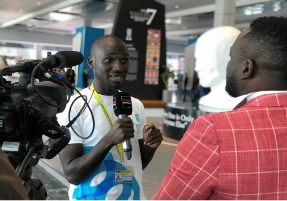

Dealrafael Jsp-E and other young leaders deliver at the World Youth Forum
World Youth Forum is an international NGO founded in 2017 based in Sharm El-Sheikh, Egypt. WYF's statement message is "sending a message of peace, prosperity, harmony, and progress from the youth to the entire world". This year 2019, Dealrafael Jsp-E, the founder of Lango Indigenous Hip-Hop Movement was among the young leaders that were chosen in Africa to present and be part of the world youth program that was held at Sharm El-Sheikh, Egypt. He was also among the 100 youth delegates who continued to attend the third batch of the African Presidential Leadership Program (APLP). The 2019 World Youth Forum ended today, and I was selected to share on the role of music and the arts in effecting change in the community. I spoke more on Indigenous Hip-Hop (taking Lango Indigenous Hip Hop Movement as a case study) and how talented youths can use it to breakdown, convey and put to a national spotlight the issues affecting their own community: poverty, corruption and impunity, political instability, post war recovery, poor resource allocation and inequality, among others. I also talked about the Hip Hop Declaration of Peace and its relevance in shaping the Hip-Hop culture for this talented young generation, and finally, how youths can overturn the situations in their communities through Indigenous Hip-Hop projects. I was also among only 3 nationalities interviewed on Nile international TV and News Central TV today at the World Youth Forum 2019 (held at the conference center – Sharm El-Sheikh), to share on how my specialist knowledge (as an entomologist and a microbiologist) could contribute to food security and how that could translate to achieving SDG 2 in Africa. I spoke more on the use of biopesticides (including pesticidal plants extracts and entomopathogens such as viruses, fungi and bacteria) as environmentally benign ways to control pests, and also highlighted on the negative effects of synthetic pesticides to the environment, water sources and human health. I also discussed the opportunities and the potential for use of these biological pest control agents in Africa, particularly by smallholder farmers.
Foeday Zinnah is another young leader in Africa who was selected to represent Liberia during the world youth program that is held annually at Sharm El-Sheikh, Egypt. The Liberian international terms his work as, God's Purpose! I was among the three different nationalities that were interviewed on the Nile international TV at the World Youth Forum to share our experiences and lessons learned so far from each season at the forum. This opportunity gave me the chance to talk more about the importance of International Peace and security in every African country with reference to my country with the focus of the negative news on social media and the internet. I also talked more about the impacts we making through YARD-Liberia Inc and the international supports we need to keep developing the minds of young people in rural part of Liberia. World Youth Forum was first sponsored and held under the auspices of the president of Egypt, Abdel Fattah el-Sisi, who agreed in November 2017 during a peace marathon and that the forum would be held annually. On February 18th of 2021, World Youth Forum was adopted by the United Nations as an international platform.